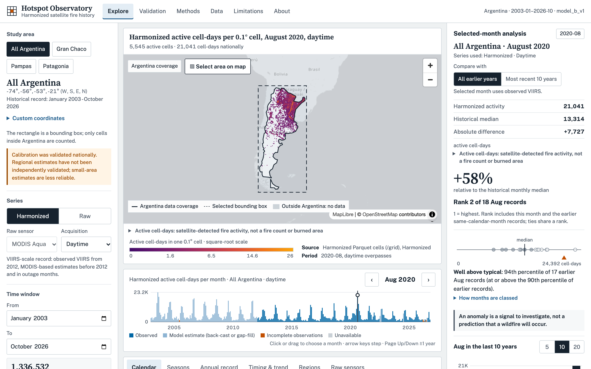
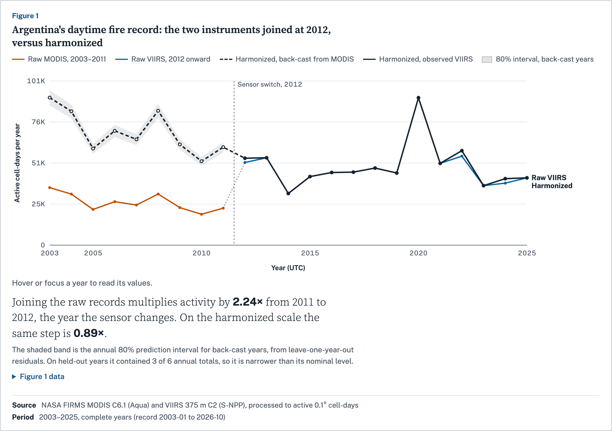
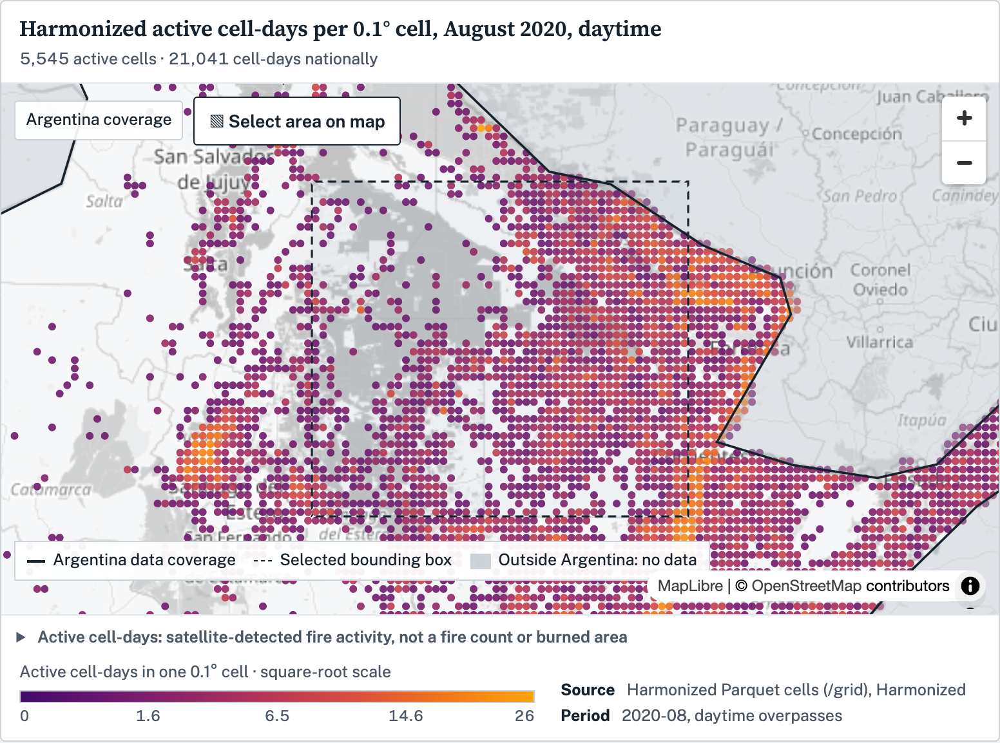
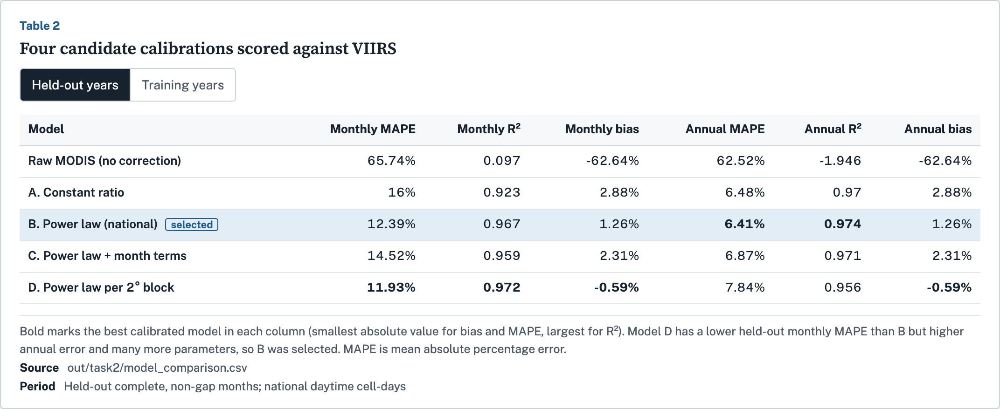
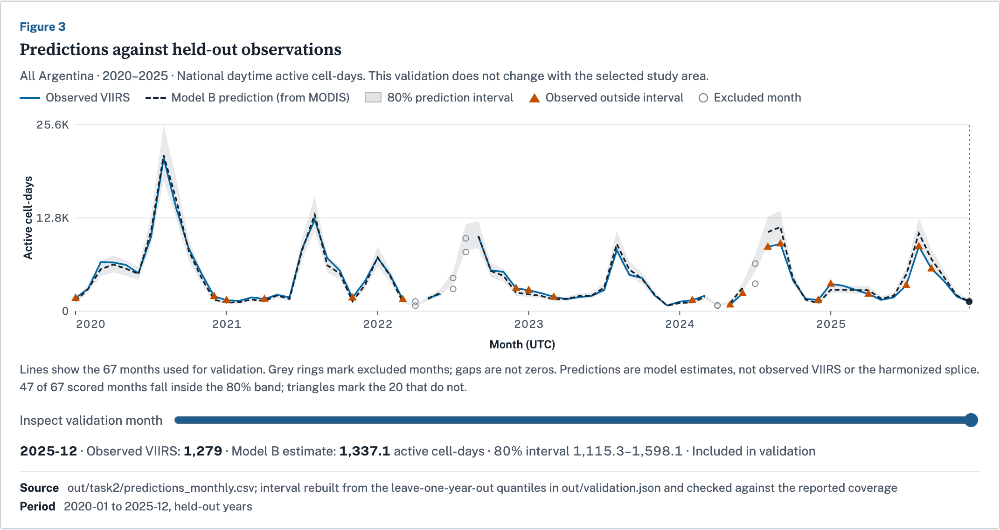
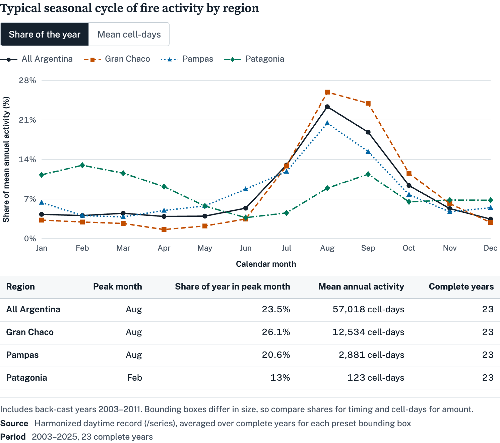
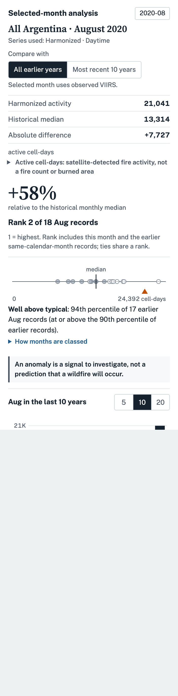
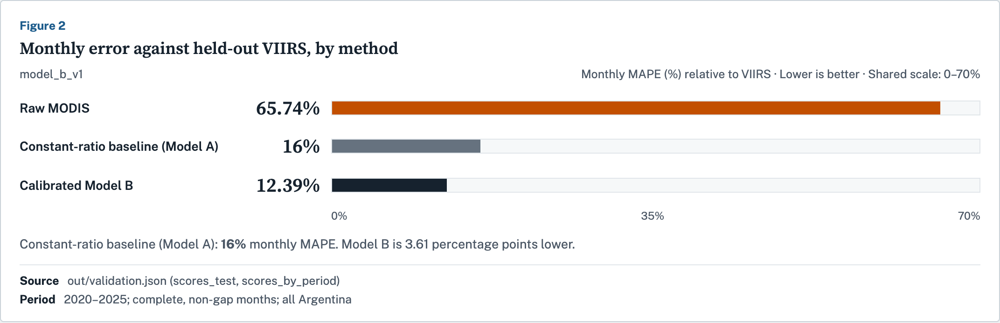

One consistent fire record for Argentina from two NASA satellites, 2003–2026.
Team: [TEAM NAME]
Members: [MEMBER NAMES]
Challenge: [CHALLENGE TITLE]




Measured honestly: 80% intervals covered 70% of months; limits shown in the tool.

Researchers and agencies: when does fire peak? Patagonia peaks in February, the north in August.
Monitoring teams: is this month unusual? Aug 2020 was +58% above the median, 2nd of 18 Augusts.
Fire managers and modellers: where and when to focus, exported with full provenance.


Impact: one consistent, validated record lets Argentina compare any fire season since 2003 on equal terms, flag unusual months, and feed fire-risk work, with every limitation shown openly.
Next steps

Code generated with AI coding assistants (OpenAI Codex, Claude) under our team's direction; approach and use cases by our team.